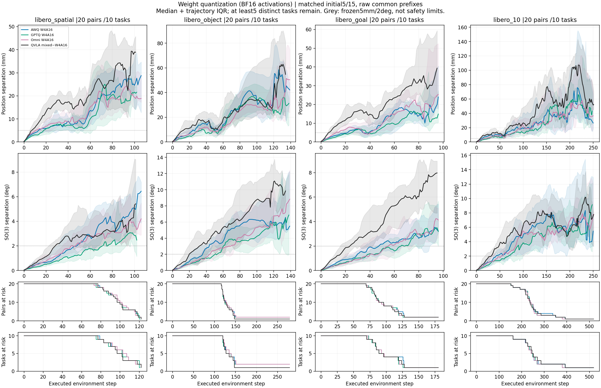
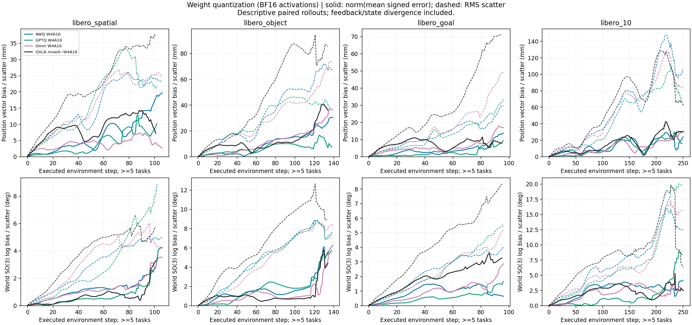
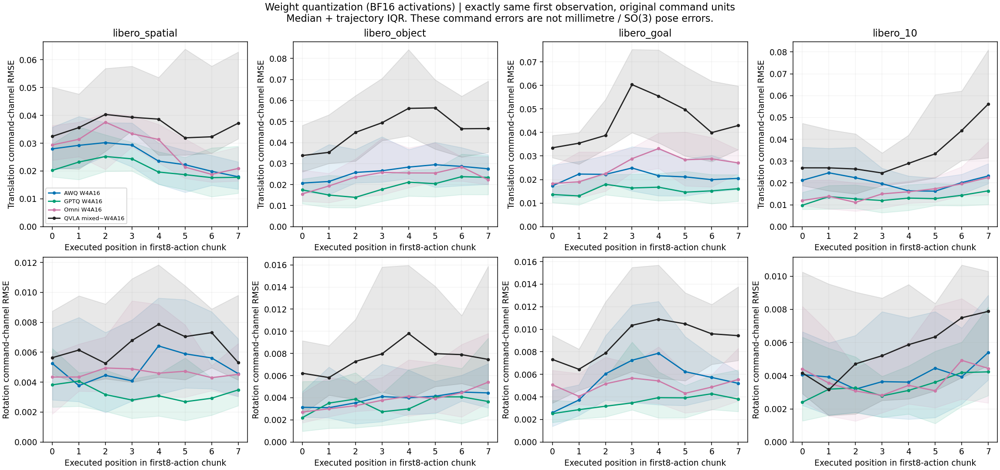
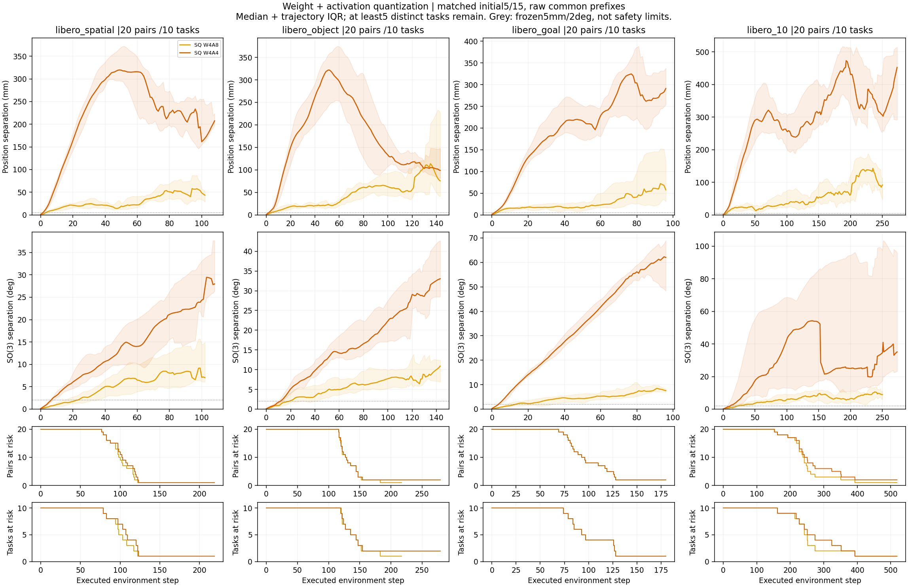
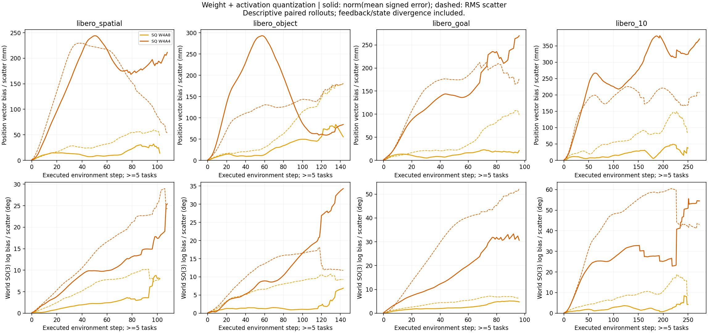
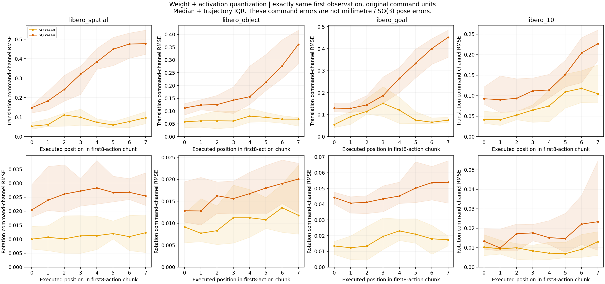
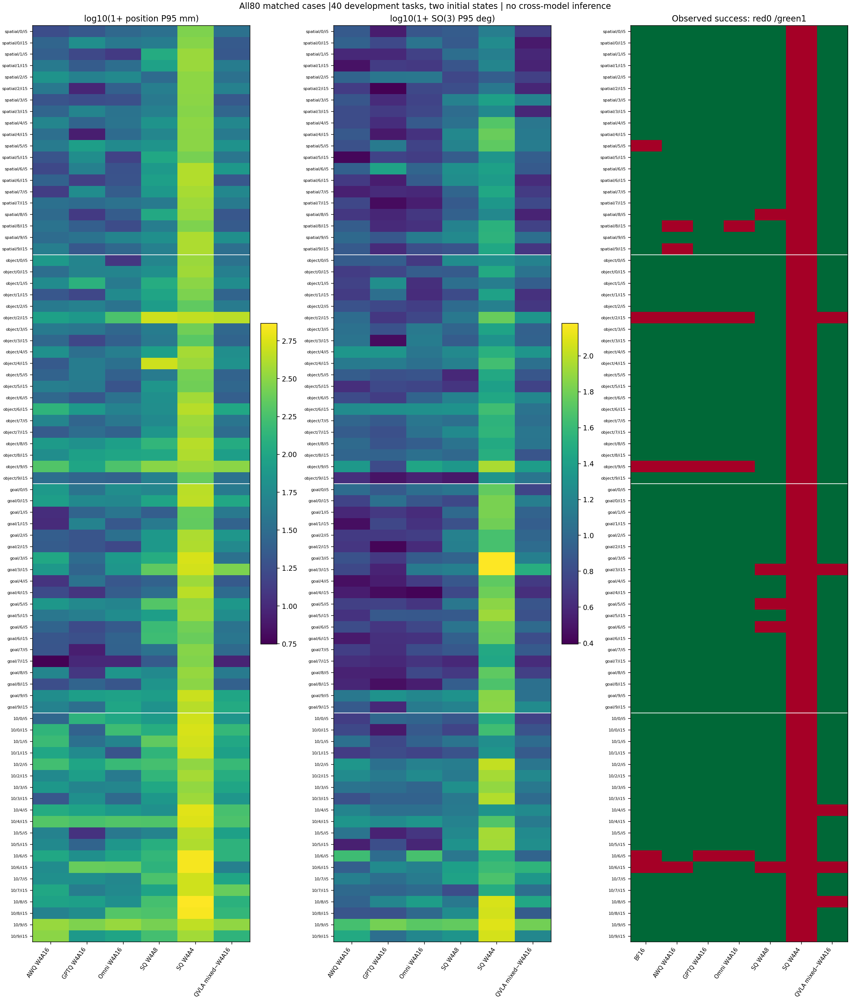
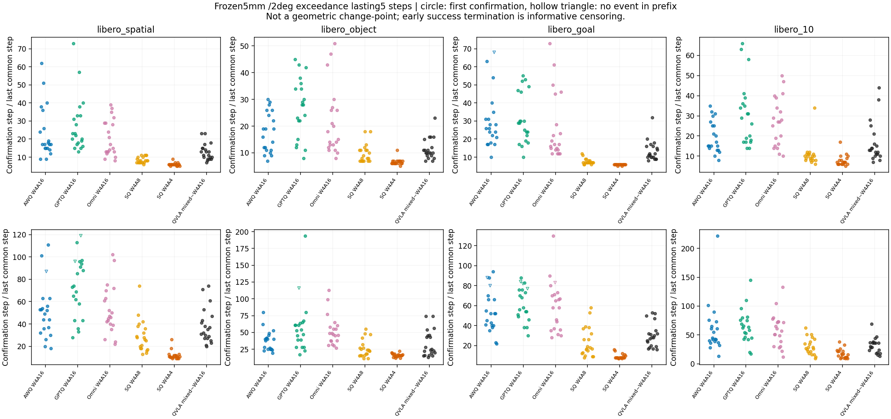
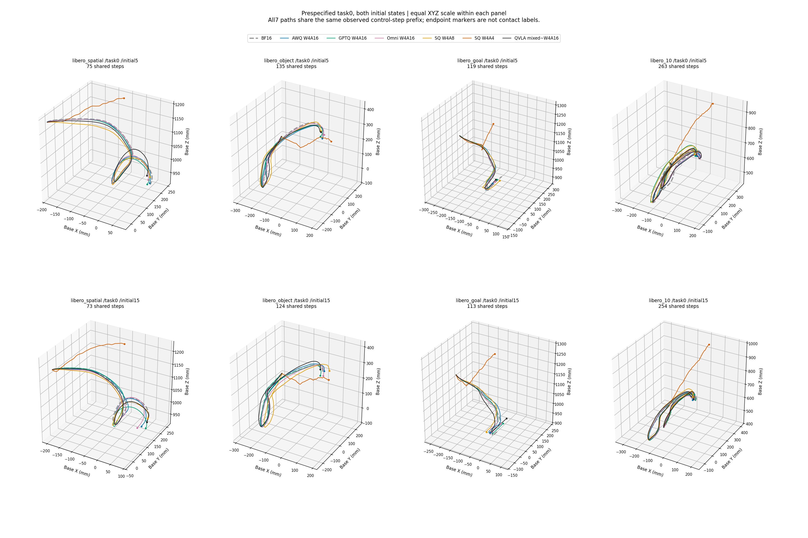

OpenVLA-OFT七条件、80病例配对
BF16与六个量化配置；四suite、十任务、初态5/15。不是五初态或三模型完成。曲线含闭环反馈，窗口不是几何拐点或已验证补偿触发点；没有训练/OPD干预。统计与逐对指标
01-weight-drift-risk
PDF
02-weight-bias-scatter
PDF
03-weight-same-input-chunk
PDF
01-activation-drift-risk
PDF
02-activation-bias-scatter
PDF
03-activation-same-input-chunk
PDF
04-case-error-success-map
PDF
05-persistent-window-confirmation
PDF
06-task0-two-initials-3d-paths
PDF